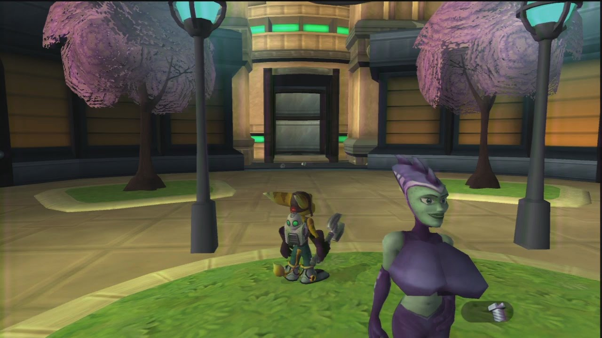

Premier trailer du jeu ratchet & Clank
La rencontre de deux légendes
Le jeu commence sur la planète des blaargs dans une cinématique où l'on voit Clank, une anomalie.
De base il devait être un robot de guerre au service du président Drek. et son «véritable nom» c'est XJ-0461.
Seulement gros soucis il tombe sur un enregistrement robot qui divulguent les plans de Drek:
- Utilisé son armée pour détruire des planètes;
- Récupérer les morceau des planètes pour en créer une parfaite;
- Car leur planète d'origine est trop polluée et est devenue inhabitable.
Terrifié par cette nouvelle Clank s’échappe de l’usine de fabrication et part à la recherche de “Qwark” le héro de la galaxie. Lors de sa fuite, il est poursuivi et s’écrase sur Veldin, planète sur laquelle il va rencontrer Ratchet.
Ratchet qui est un lombax solitaire un peu mécano qui vient de terminer son vaisseau spatial. Seulement il lui manque un système d’allumage robotique pour pouvoir décoller.
Donc Clank lui propose de l’aider seulement si Ratchet l’emmène voir Qwark. Étant donné que Ratchet, lui, tout ce qu’il veut c’est partir, il n’est donc pas très difficile à convaincre. Même s’il en à cure de ce qu’il va arriver aux autres planètes.
Qwark le félon
C’est à partir de là que la construction de l’amitié entre Clank, le noble robot un peu naïf et Ratchet, le lombax je-m’en-foutiste et un peu cynique. Et c’est l’évolution de leur amitié qui nous tient en haleine tout le long du jeu.
Après quelques péripéties sur plusieurs planètes. On se rendra très vite compte que Qwark n’est rien d’autre qu’un félon minable.
C’est lorsqu’il les a envoyés sur Umbris pour passer un test d’héroïsme (qui avait pour but de les abattre).
Ce même test se termine contre un monstre géant au milieu de la lave. On apprend que Qwark est le porte parole de la future planète blaarg. Cette même planète qui le sponsorise car il est plus intéressé par son commerce et sa notoriété qu’autre chose.
Étant donné que nos deux héros avaient déjà perturber les plans de Drek. Il avait envoyé Qwark mettre Ratchet et Clank hors d’état de nuire.
À la fin du test , Clank est giflé par la brutalité qu’est la réalité, lui qui pensait que Qwark était un héors noble avec le sens du devoir. Quant à Ratchet lui il est aveuglé par la colère et va juste chercher à se venger de Qwark à partir de maintenant.
La vengeance devient donc l’objectif numéro 1. Après un jeu de piste et Qwark battu lors d’une bataille spatiale épique. Il décide enfin de venir en aide à la galaxie. De plus les nouvelles catastrophiques s'enchaînent: Drek a créer un déplanètiseur et en plus il vise vers Veldin !
Après avoir terrassé tous les blaargs sur place et Drek dans un combat long et douloureux, notre Lombax et petit robot qui ont failli perdre la vie.
Après avoir atteint cet objectif, tout laissait présager que nos deux héros allaient se séparer. Pendant que Clank était en train de partir, Ratchet rappelle Clank sous prétexte qu'il y avait un bras à réparer.
Et c’est là qu’ils resteront ensemble, et ils resteront ensemble pour au moins les 20 prochaines années.

Sur le premier opus: Lors d’une course d'hoverboard, il faut interagir avec une présentatrice pour y avoir accès. Si vous faites des saut horizontaux devant elle avant de commencer la course, sa poitrine grandit à chaque saut.
Avant la manipulation
Après la manipulation